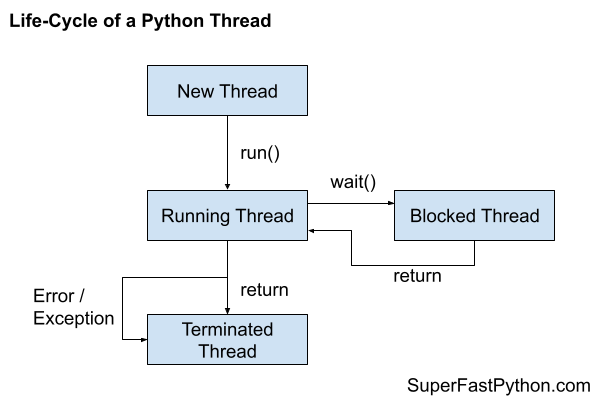

Thread Life-Cycle in Python
You can understand a thread as having a life-cycle from new, running, optionally blocked, and terminated.
In this tutorial you will discover the life-cycle of threads in Python.
Let's get started.
Need for a Thread Life-Cycle
A thread is a thread of execution in a computer program.
Every Python program has at least one thread of execution called the main thread. Both processes and threads are created and managed by the underlying operating system.
Sometimes we may need to create additional threads in our program in order to execute code concurrently.
Python provides the ability to create and manage new threads via the threading module and the threading.Thread class.
You can learn more about Python threads in the guide:
In concurrent programming, it can be helpful to think about threads as having a life-cycle.
That is, threads are created, run, and then die.
What is the life-cycle of threads in Python and how do threads move through this life-cycle?
Thread Life-Cycle
A thread in Python is represented as an instance of the threading.Thread class.
Once a thread is started, the Python interpreter will interface with the underlying operating system and request that a new native thread be created. The threading.Thread instance then provides a Python-based reference to this underlying native thread.
Each thread follows the same life-cycle. Understanding the stages of this life-cycle can help when getting started with concurrent programming in Python.
For example:
- The difference between creating and starting a thread.
- The difference between run and start.
- The difference between blocked and terminated
And so on.
A Python thread may progress through three steps of its life-cycle: a new thread, a running thread, and a terminated thread.
While running, the thread may be executing code or may be blocked, waiting on something such as another thread or an external resource. Although, not all threads may block, it is optional based on the specific use case for the new thread.
- 1. New Thread.
- 2. Running Thread.
- 2a. Blocked Thread (optional).
- 3. Terminated Thread.
A new thread is a thread that has been constructed by creating an instance of the threading.Thread class.
A new thread can transition to a running thread by calling the start() function.
A running thread may block in many ways, such as reading or writing from a file or a socket or by waiting on a concurrency primitive such as a semaphore or a lock. After blocking, the thread will run again.
Finally, a thread may terminate once it has finished executing its code or by raising an error or exception.
The following figure summarizes the states of the thread life-cycle and how the thread may transition through these states.

Next, let's take a closer look at each state of the thread life-cycle in turn.
Step 1: New Thread
A new thread is created by creating an instance of the threading.Thread class.
For example:
...
# create a new thread
thread = threading.Thread(...)Custom Function
A new thread can be configured to execute a specific function via the "target" argument to the constructor of the threading.Thread class.
For example, if we had a function named task(), we could configure a new thread to execute this function when it runs as follows.
...
# create a new thread
thread = threading.Thread(target=task)You can learn more about running functions in a new thread in this tutorial:
Extends threading.Thread
We may also create a new thread by creating an instance of a class that extends the threading.Thread class.
One example is the threading.Timer class.
For example:
...
# create a new timer thread
thread = threading.Timer(...)You can learn more about timer threads in this tutorial:
Custom Class That Extends threading.Thread
Another example might be a custom class that we define that extends the threading.Thread class.
A custom thread must override the run() function in order to specify the code that will run in a new thread.
For example:
# custom thread class
class CustomThread(threading.Thread):
# run code in a new thread
def run(self):
# ...
...
# create a custom thread
thread = CustomThread(...)
You can learn more about extending the threading.Thread class in this tutorial:
A new thread is not yet running.
Next, let's look at a running thread.
Step 2: Running Thread
A new thread can become a running thread by calling the start() function.
Calling the start() function on a new thread will internally call the run() function, among other things.
The run() function will in turn call your custom function if specified via the "target" keyword in the constructor to the threading.Thread class.
Alternatively, if you defined a custom class that extended the threading.Thread class and override the run() function, then the start() function would call your overridden run() function.
Nevertheless, the content of the run() function is executed in a new thread of execution.
We can check if a thread is running by calling the is_alive() function which will return True, otherwise the thread is new or has terminated.
For example:
...
# check if the thread is running
if thread.is_alive():
# ...
else:
# ...
As part of calling the start() function on a new thread, a new native thread of execution is requested from the underlying operating system and is used to run the code in the run() function of your new thread.
There are three concerns with the start() function, they are:
- The start() function does not block.
- The start() function does not take arguments for your new thread.
- The start() function does not return values from your new thread.
Let's take a closer look at these concerns.
Start Does Not Block
The start() function does not block.
This means that it returns immediately. It does not wait and return after the new thread has terminated.
If you need to wait until the new thread finishes, you can join the new thread via the join() function.
For example:
...
# start a new thread
thread.start()
# wait for the new thread to terminate
thread.join()You can learn more about joining threads here:
Start Does Not Take Arguments
The start() function and the internal run() function do not take arguments.
If you need to pass arguments to your new thread, you can via the "args" argument of the constructor of the threading.Thread class or as arguments to the constructor of your overridden thread class.
For example:
...
# create a new thread
thread = threading.Thread(target=task, args=(arg1, arg2))Start Does Not Return Values
The start() function and the internal run() function do not return values.
If you need to return values from your new thread to the caller thread or another thread, you have a number of options. Such as:
- Store data in a global variable.
- Store data in a passed-in data structure via the threading.Thread constructor.
- Store data in instance variables, if overriding the threading.Thread class.
- Share data between threads using a queue.Queue.
You can learn more about how to share variables between threads in this tutorial:
You can learn more about how to return values from a thread in this tutorial:
Next, let's consider blocked threads.
Step 2a: Blocked Thread (optional)
A running thread may make a call to a function that blocks.
In concurrency programming, a blocking function call means a function call that waits on some event or condition.
This may involve waiting for another thread via concurrency primitive, such as:
- Waiting for a mutex lock.
- Waiting on a barrier.
- Waiting on a semaphore.
- Waiting for an event.
- Waiting for a thread to terminate.
And so on.
It may also involve waiting for a blocking IO, such as reading or writing from an external device, such as:
- A file on the hard drive.
- A socket on a local or remote server.
- A device like a printer, external drive, peripheral, or screen.
And so on.
You can learn more about blocking function calls in this tutorial:
A thread that is blocked is still running.
The is_alive() function will return True if the thread is blocked.
While a thread is blocked, the operating system may decide to suspend the thread and allow another thread to run. This is called a context switch. It may then resume the suspended thread again after an interval of time or if the thread is unblocked.
Next, let's consider terminated threads.
Step 3: Terminated Thread
A thread is terminated after the run() function returns or exits.
Exit Normally
The run() function may exit normally if your custom function finishes normally, if using the "target" keyword on the threading.Thread constructor. It may also exit normally if you override the run() function when extending the threading.Thread class.
Exiting normally means that the end of the function was reached and the function returned. It may also mean that you returned from the function directly with the "return" statement.
For example:
# task executed in a new thread
def task():
# ...
if variable:
# normal exit
return
# ...
# normal exit
Raise Exception
A thread is also terminated if an unhandled exception or an error is raised.
An exception or error may be raised within a custom target function or within an overridden run() function. The effect is the same.
The exception will bubble up to the top-level of the thread and will terminate the thread.
Unhandled exceptions can be managed in new threads via the threading.excepthook() function. Although, this cannot be used to prevent threads from terminating.
You can learn more about handling unexpected exceptions in new threads here:
Cannot Restart a Thread
Once a thread has terminated, it cannot be restarted.
Threads are single-use only.
You can learn about restarting threads here:
Stop a Thread
Finally, a thread cannot be forcefully terminated.
For example, there is no stop() function on a threading.Thread instance.
Instead, if you need to forcefully terminate a thread from another thread, this can be achieved by using a thread-safe boolean flag, such as threading.Event. The run() function of the new thread can then frequently check the status of the boolean flag and exit if the flag is set.
You can learn about stopping a thread in this tutorial:
Takeaways
You now know the life-cycle of threads in Python.